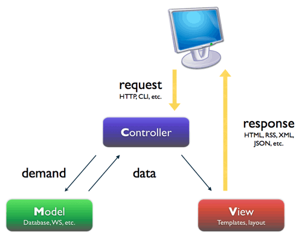
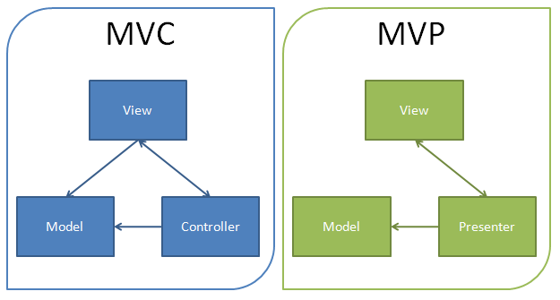
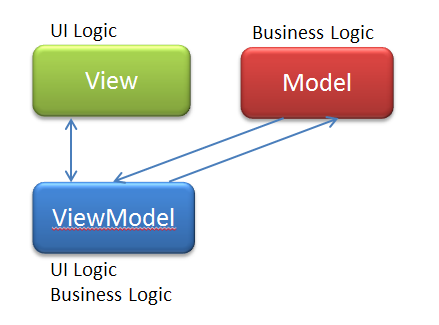
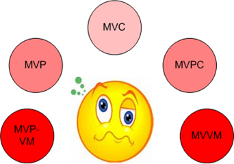
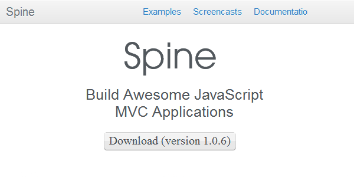
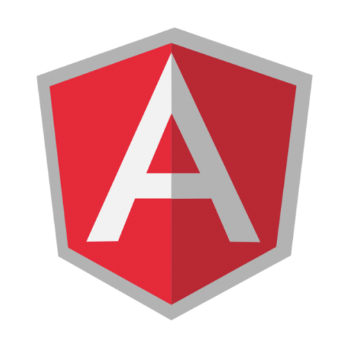

- 7+ years experience
- Linux and Databases administrator
- Web and Mobile developer (Ruby, Java, JavaScript, Objective-C, C/C++, Golang)
- Open-Source developer
- pgtune online
- rwprecise64
- webp-ffi
- MongodbLogger for Rails
- Piro - Chrome extension for PivotalTracker
- SMTRails and SHTRails (shared templates for rails)
Alexey Vasiliev
an abstraction in which software providing generic functionality can be selectively changed by additional user-written code, thus providing application-specific software
Main features
Framework features
- Inversion of control
- Default behavior
- Extensibility
- Non-modifiable framework code
MV* js features
- Selectors
- DOM traversal
- DOM manipulation
- Utility functions
- Event handling
- Ajax
Why do you need js framework?
- You need structure for your web app
- Binding data to view (model to HTML)
- Useful features (history, validation, etc.)
- You need Single Page Application (SPA)
- Don't Reinvent The Wheel!!!
JavaScript MV* Patterns
MVC
JavaScript MV* Patterns
- Models - represent the domain-specific knowledge and data in an application
- Views - typically considered the User-interface in an application
- Controllers - handle the input (e.g clicks, user actions) in an application and Views can be considered as handling the output

What does MVC give us?
JavaScript MV* Patterns
- Easier overall maintenance. When updates need to be made to the application it is very clear whether the changes are data-centric, meaning changes to models and possibly controllers, or merely visual, meaning changes to views.
- Decoupling models and views means that it is significantly more straight-forward to write unit tests for business logic
- Duplication of low-level model and controller code (i.e what we may have been using instead) is eliminated across the application
- Depending on the size of the application and separation of roles, this modularity allows developers responsible for core logic and developers working on the user-interfaces to work simultaneously
MVP
JavaScript MV* Patterns

MVVM
JavaScript MV* Patterns
- Model
- View
- ViewModel

MVC vs MVP vs MVVM
JavaScript MV* Patterns
- Both MVP and MVVM are derivatives of MVC
- In MVC, the View sits on top of our architecture with the controller beside it
- In MVP, the role of the controller is replaced with a Presenter
- MVVM consequently allows us to create View-specific subsets of a Model which can contain state and logic information, avoiding the need to expose the entire Model to a View

JavaScript Frameworks
Backbone.js
JavaScript Frameworks

- Simplicity
- Extremely easy to get into
- Huge community (ecosystem) and lots of solutions
Spine
JavaScript Frameworks

- Simplicity
- Extremely easy to get into
- Good documentation
Ember.js
JavaScript Frameworks
- Desktop-level application development for the web
- Convention over configuration
- Composed views
- Lot of boilerplate (bindings, computer properties, handlebars, magics)
AngularJS
JavaScript Frameworks

- DSL in HTML
- Dependency Injection
- Directives
- Easy testing
KnockoutJS
JavaScript Frameworks
- DSL in HTML
- Good for non complex workflow
- Extremely easy to get into
- Easy testing
CanJS
JavaScript Frameworks
- Lightweight
- Flexible
- Designed for plugins
Dojo
JavaScript Frameworks
- Mature widget infrastructure
- Strong support for internationalization
- For large scale applications
YUI
JavaScript Frameworks
- YUI extension infrastructure
- Includes widgets/components
React/Polymer/X-Tags
JavaScript Frameworks
- Isn't an MVC framework
- Components
- Need to fix HTML
Criteria For Selecting A Framework
JavaScript Frameworks
- Has the framework been proved in production?
- What is the framework really capable of?
- Is the framework mature?
- Is the framework flexible or opinionated?
- Have you really played with the framework?
- Does the framework have a comprehensive set of documentation?
- Have you reviewed the community around the framework?
TodoMVC
JavaScript Frameworks
How to select framework/library?

but even then you are lost in the choice :)
Yet Another Framework Syndrome (YAFS)
JavaScript Frameworks
- Research
- Document
- Support
SPA
Single Page Application
Advantages and disadvantages
Single Page Application
Advantages
- All data has to be available via some sort of API, which can provided for developers (DRY!)
- Reduce rendering of HTML on backend
- Offline support (appcache) and as mobile app
- More responsive application/interaction
Disadvantages
- Duplication of code (validations)
- Business logic in JavaScript
- JavaScript memory leaks :(
The secret to building large apps is never build large apps. Break your applications into small pieces. Then, assemble those testable, bite-sized pieces into your big application
<Thank You!>
Contact information